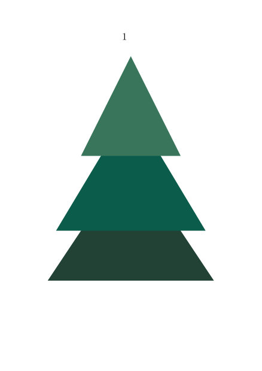

Some lucky people will be able to produce all their documents in MetaPost and MetaFun and ConTeXt and never have to worry about the ugly world of MS Word, PowerPoint and Visio. Unfortunately, most of us will, at some point, have to share our graphics with colleagues who are unenlightened.
This page includes methods of sharing graphics/figures with co-workers who do not use ConTeXt. This includes importing to and exporting from ConTeXt.
Contents
Exporting MetaPost drawings as PDF files
PDF can be generated from MetaPost code using MPtoPDF or texexec --mptex. But where a drawing uses ConTeXt to generate formatted text or labels, it is necessary to generate a document which contains the graphic.
This can be achieved, with the page cropped to the size of the graphic, using the following construct:
\starttext \startMPpage draw fullcircle scaled 10cm ; \stopMPPage \stoptext
See also \startMPpage.
Importing MetaPost drawings into MS Word or PowerPoint
MS Word can import pictures in many graphics formats, but not PDF. Two of the available options are:
- Use encapsulated postscript (EPS). This provides graphics which print perfectly (on a PS printer) but which look blocky on screen, so are unsuitable for PowerPoint presentations.
- Use scalable vector graphics (SVG) as an intermediate format between PDF and the MS Visio tool.
Converting to EPS
MetaPost drawings can be converted to encapsulated postscript as follows:
- Create a PDF drawing (see "Exporting MetaPost drawing as PDF files" above).
- From the command line, convert to EPS using pdftops:
pdftops -eps -pagecrop myfile.pdf
- Import the EPS file as a picture into Word.
Note that the preview on-screen in Word is of poor quality, but when printed it should have the full quality of the original.
Converting to Visio via SVG
Visio is another Microsoft product whose .VSD files can be imported directly into Word or PowerPoint, giving good reproduction on screen and (usually) in print. Luckily, Visio will import SVG files. The steps to achieve this are:
- Create a SVG file directly by running metapost 1.2 with -soutputformat="svg"
or
-
Create an SVG file by conversion via
- MP to PDF (see above).
- MPtoSVG to convert to SVG.
- Load SVG into Visio.
- Save as VSD file from Visio.
- Import VSD into Word or PowerPoint.
Phew!
Converting from SVG/PDF/PS to MetaPost
ConTeXt can include and convert SVG graphics to MetaPost. When you add \enabletrackers[metapost.svg.result] at the start of the document you get the generated MetaPost code in the terminal, e.g.
\enabletrackers[metapost.svg.result] % https://www.freecodecamp.org/news/svg-tutorial-learn-to-code-images/ \startbuffer[svgtest] <svg width="200" height="200" viewBox="-100 -100 200 200"> <polygon points="0,0 80,120 -80,120" fill="#234236" /> <polygon points="0,-40 60,60 -60,60" fill="#0C5C4C" /> <polygon points="0,-80 40,0 -40,0" fill="#38755B" /> <rect x="-20" y="120" width="40" height="30" fill="brown" /> </svg> \stopbuffer \starttext \includesvgbuffer[svgtest] \stoptext
shows the following listing in the terminal (and log file)
metapost > svg > result graphic:
draw image (
fill (((0,0)--(80,-120)--(-80,-120)--cycle)&&cycle)
withcolor svgcolor(0.137,0.259,0.212)
;
fill (((0,40)--(60,-60)--(-60,-60)--cycle)&&cycle)
withcolor svgcolor(0.047,0.361,0.298)
;
fill (((0,80)--(40,0)--(-40,0)--cycle)&&cycle)
withcolor svgcolor(0.22,0.459,0.357)
;
fill (unitsquare xyscaled (40,30) shifted (-20,-150))
withcolor svgcolor(0.647,0.165,0.165)
;
currentpicture := currentpicture shifted (100,-100);
clip currentpicture to (unitsquare xyscaled (200,-200));
) ;
Be aware ConTeXt uses its own MetaFun extension when it generates the converted MetaPost code.
Let's check by pasting this MetaFun code in an input file:
-
\setuppapersize[A7] \starttext \startMPcode draw image ( fill (((0,0)--(80,-120)--(-80,-120)--cycle)&&cycle) withcolor svgcolor(0.137,0.259,0.212) ; fill (((0,40)--(60,-60)--(-60,-60)--cycle)&&cycle) withcolor svgcolor(0.047,0.361,0.298) ; fill (((0,80)--(40,0)--(-40,0)--cycle)&&cycle) withcolor svgcolor(0.22,0.459,0.357) ; fill (unitsquare xyscaled (40,30) shifted (-20,-150)) withcolor svgcolor(0.647,0.165,0.165) ; currentpicture := currentpicture shifted (100,-100); clip currentpicture to (unitsquare xyscaled (200,-200)); ) ; \stopMPcode \stoptext
- 